Simple1.4.16 · 승인한 작업 흐름 적용 화면
실제 Swing 컴포넌트와 합성 데이터를 사용한 캡처입니다. Windows Burp 본체 캡처와 시안의 픽셀 동일성을 의미하지 않습니다.
승인 시안과 실제 화면 PDF · 이미지를 누르면 원본 크기로 열립니다.
1. 요청·응답 목록
필요한 요청을 찾고 원문을 읽은 뒤 검증 도구로 연결
라이트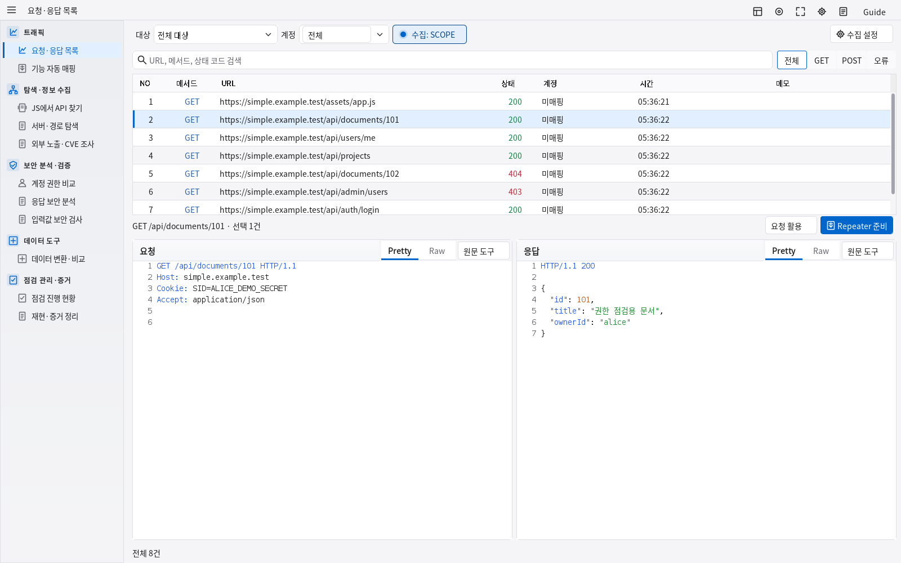
다크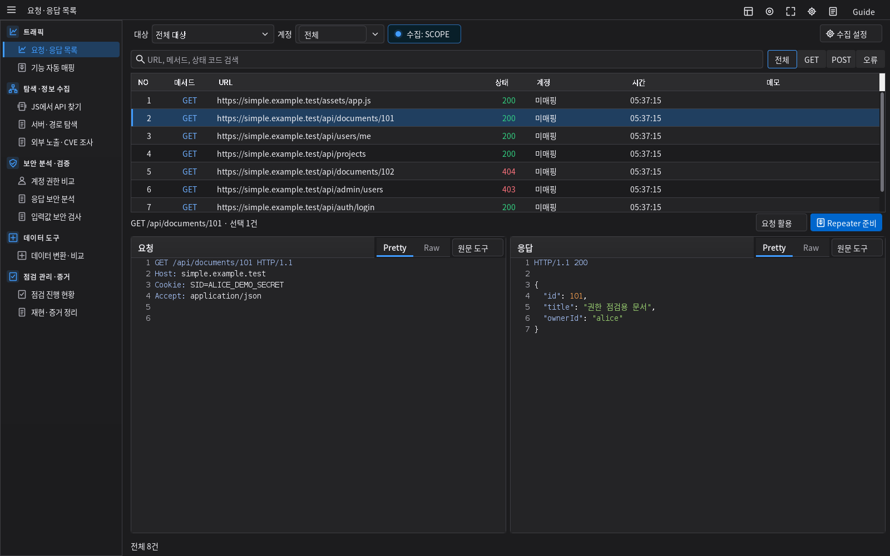
- 선택 요청의 문맥과 Repeater 준비를 묶고, 비교·입력값 검사·증거 연결은 요청 활용 메뉴로 정리했습니다.
- 대상·계정·수집 상태와 검색·필터를 구분하고, 패킷의 보조 도구는 필요할 때 열도록 구성했습니다.
- 기존 원본 ID와 준비 동작을 사용하며 화면 이동·선택만으로 대상 요청을 전송하지 않습니다.
2. 기능 자동 매핑
요청을 기능으로 분류하고 원문과 분류 근거를 확인
라이트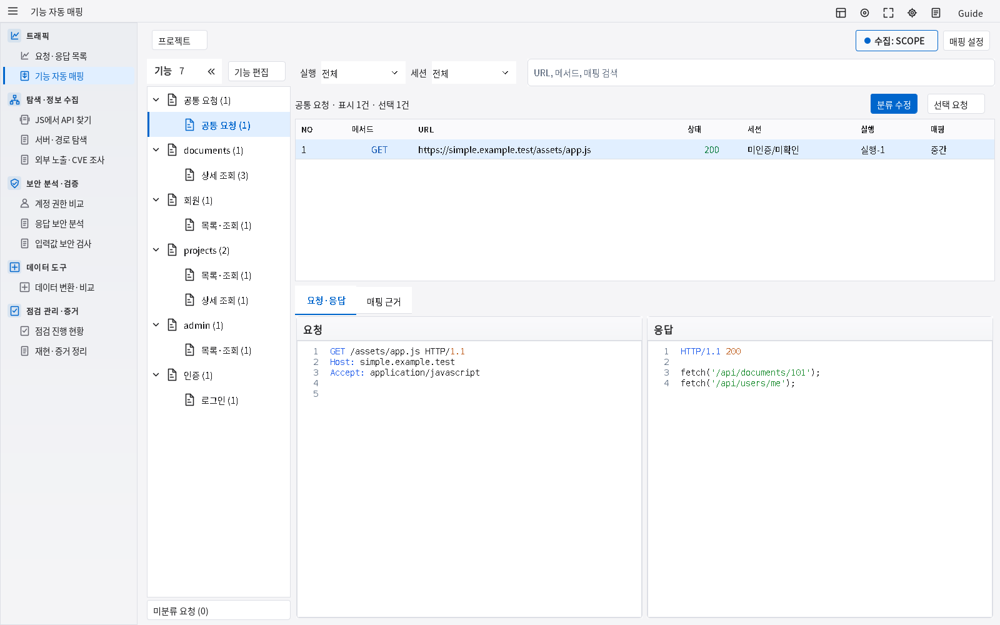
다크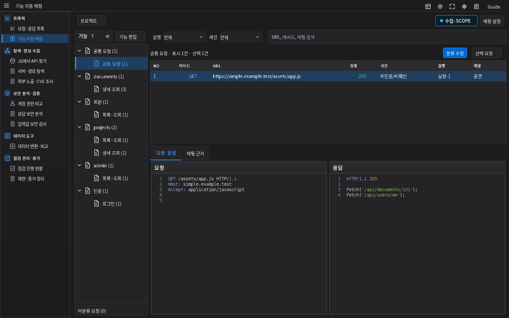
- 기능 트리와 요청 목록을 중심에 두고, 선택 요청의 분류 수정을 주 동작으로 구분했습니다.
- 프로젝트 관리·기능 편집·선택 요청 작업을 각 문맥의 메뉴로 묶었습니다.
- 기존 매핑·세션·원문 모델과 수집 경로를 유지하면서 요청·응답과 분류 근거를 확인합니다.
3. JS에서 API 찾기
발견 경로와 호출 코드를 함께 확인한 뒤 검증 요청 준비
라이트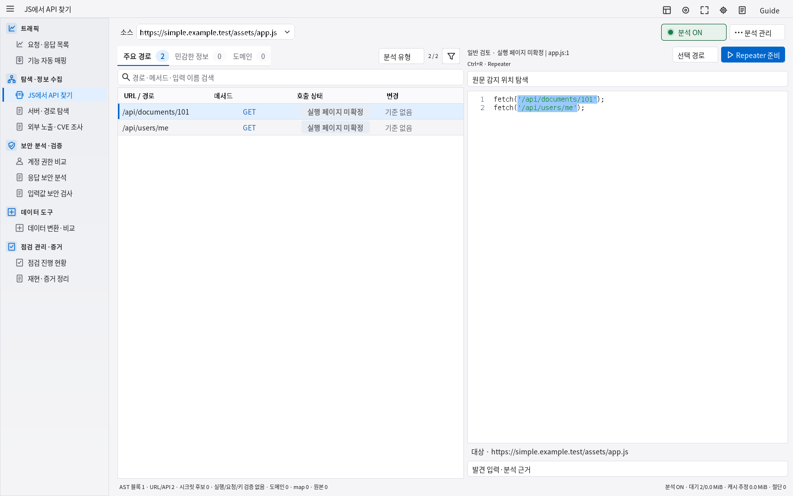
다크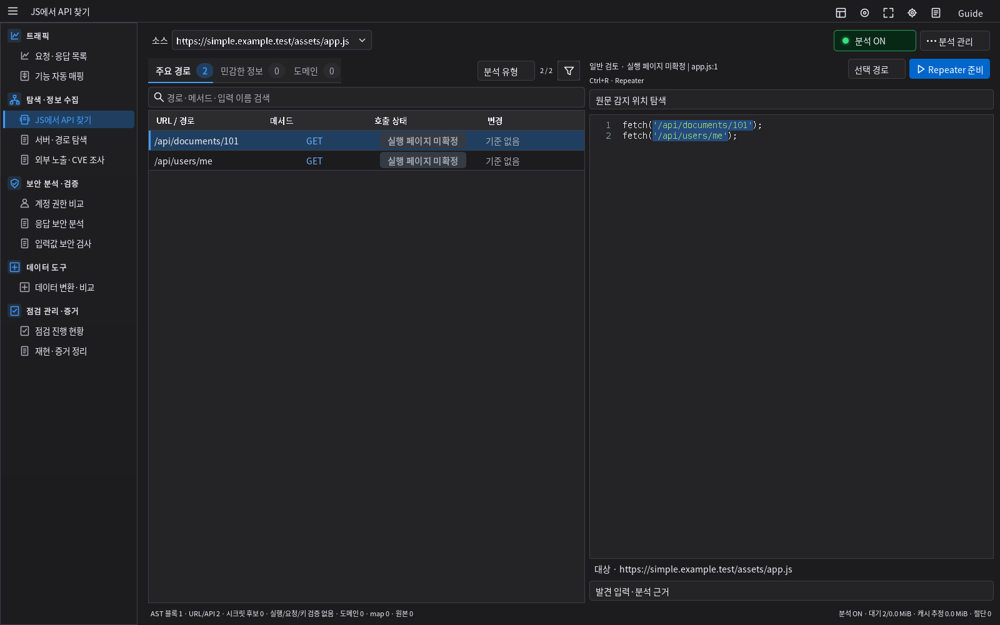
- 발견 경로 목록을 왼쪽, 선택 소스를 오른쪽에 배치해 목록과 호출 코드를 함께 확인합니다.
- 반복 사실표·원문 탐색은 접힘 영역으로 옮기고, 주요 세 유형 외 결과는 분석 유형 메뉴로 묶었습니다.
- Repeater 준비를 강조하며 원문 위치·관찰 패킷·분석 관리는 관련 메뉴에 유지했습니다.
4. 서버·경로 탐색
관측 근거가 있는 경로를 골라 GET 응답을 확인하기
라이트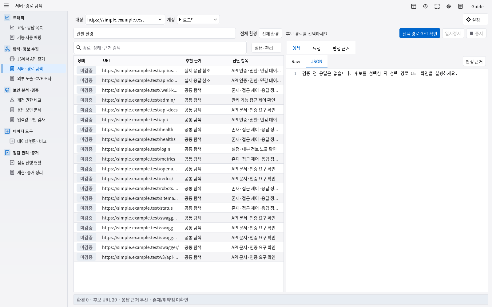
다크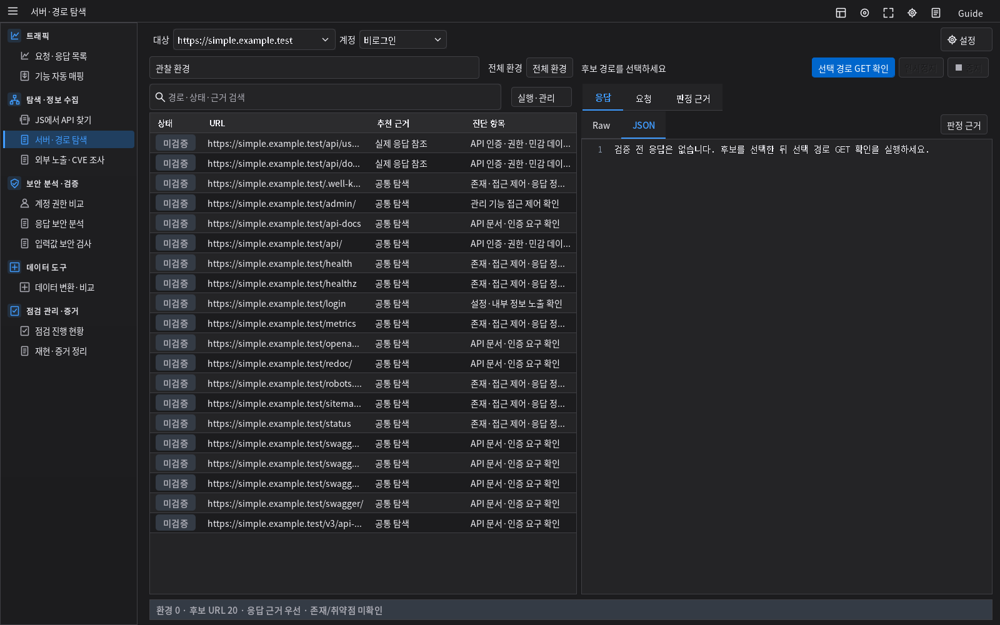
- 후보 목록은 왼쪽, 선택 경로의 응답·요청·판정 근거는 오른쪽 탭으로 구성했습니다.
- 선택 GET 확인과 일시정지·중지는 가까이 두고, 일괄 실행·재개·저장 관리는 메뉴로 묶었습니다.
- 환경 단서는 접어서 확인하며 대상·계정·실제 GET 전송 조건과 기존 검증 로직을 유지합니다.
5. 외부 노출 조사 · 검색 노출
검색식을 열고 가져온 URL을 SCOPE·근거와 함께 검토하기
라이트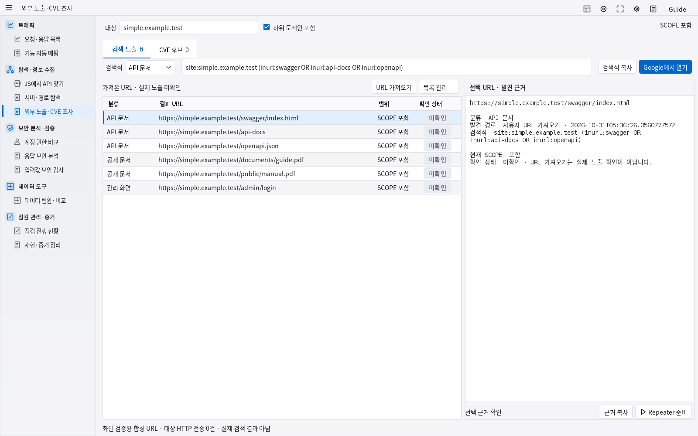
다크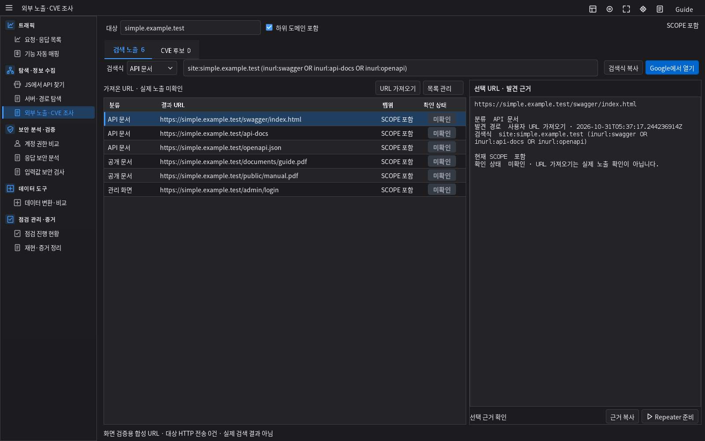
- 검색식 작성에서 가져온 URL 목록, 선택 URL의 발견 근거로 이어지는 두 영역을 구성했습니다.
- Google 열기를 주 동작으로 두고 가져오기·목록 관리·선택 근거 활용을 분리했습니다.
- URL 가져오기는 노출 확인 완료를 뜻하지 않으며 Repeater 준비도 기존 SCOPE 검사를 거칩니다.
6. 외부 노출 조사 · CVE 후보
관측 제품에 적용될 수 있는 CVE 조건과 출처를 검토하기
라이트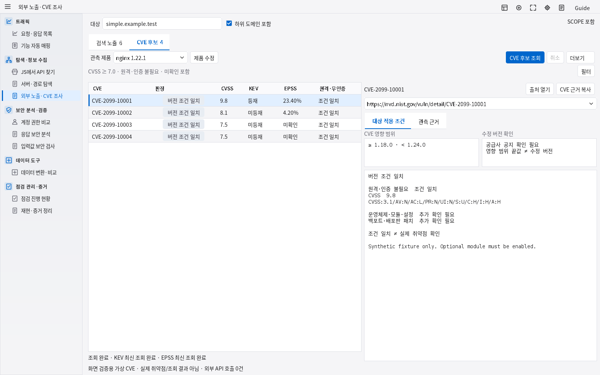
다크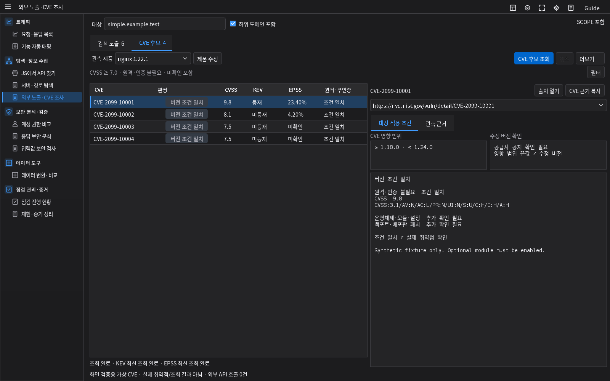
- 관측 제품을 한 곳에서 선택하고 수동 수정·세부 필터는 필요할 때 펼치게 했습니다.
- 결과 목록과 선택 후보를 나란히 두고, 다섯 개 동등한 박스를 적용 조건·관측 근거 탭으로 통합했습니다.
- 영향 범위·수정 버전 확인·원본 ID·제공자 최신성 및 미확인 상태를 기존 데이터로 표시합니다.
7. 계정 권한 비교
역할별 응답 차이에서 직접 검토할 요청을 찾기
라이트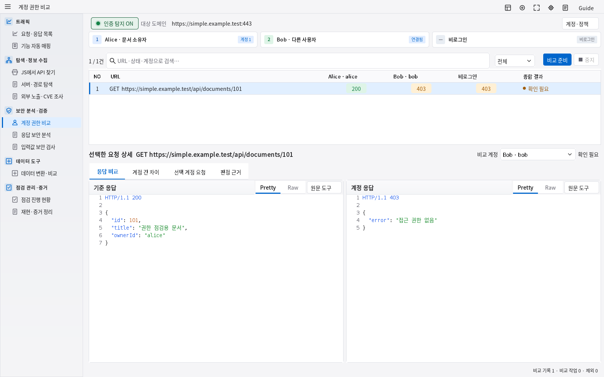
다크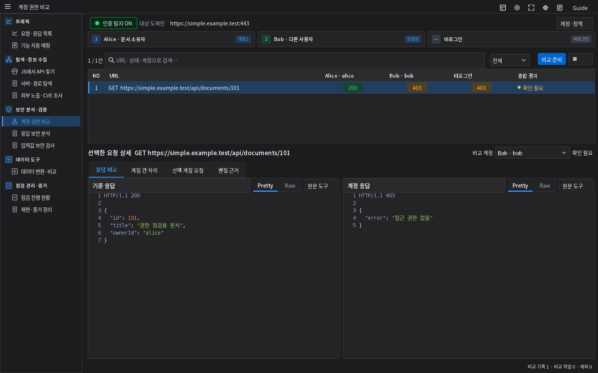
- 역할·이름·연결 상태를 작은 클릭 가능한 요약으로 정리해 응답을 읽을 공간을 확보했습니다.
- 비교 준비를 기록 문맥에 두고 계정·정책·보완 작업은 관련 메뉴로 묶었습니다.
- 연결된 후보와 실제 검증된 권한을 구분하며 기존 계정·원문·판정 및 명시적 실행 조건을 유지합니다.
8. 응답 보안 분석
관찰 내용을 응답 원문과 대조하고 검토한 항목을 증거로 정리
라이트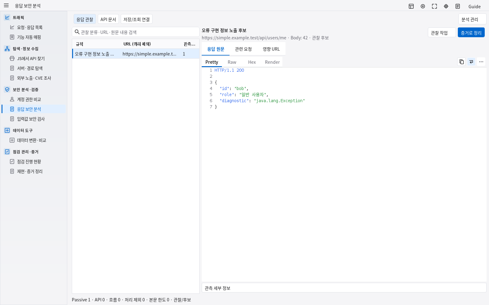
다크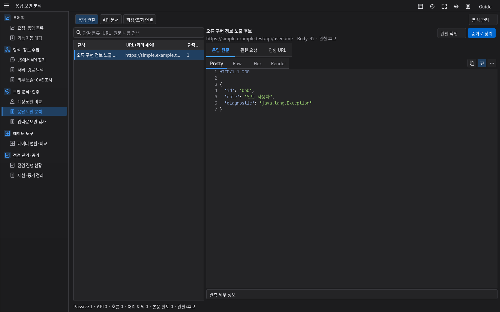
- 관찰 목록과 선택 항목의 원문 검사 영역을 나란히 배치했습니다.
- 반복되는 요약을 압축하고 근거·관련 요청·영향 URL을 같은 영역에서 확인합니다.
- 증거 정리를 주 동작으로 두며 관찰 후보를 실제 취약점 확인 완료로 표현하지 않습니다.
9. 입력값 보안 검사 · 요청 준비
검사 위치와 전송 조건을 확인하고 직접 검사 시작하기
라이트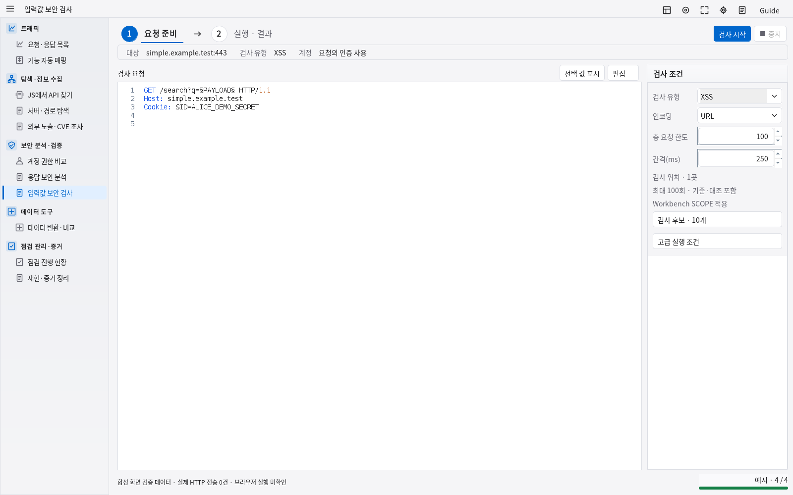
다크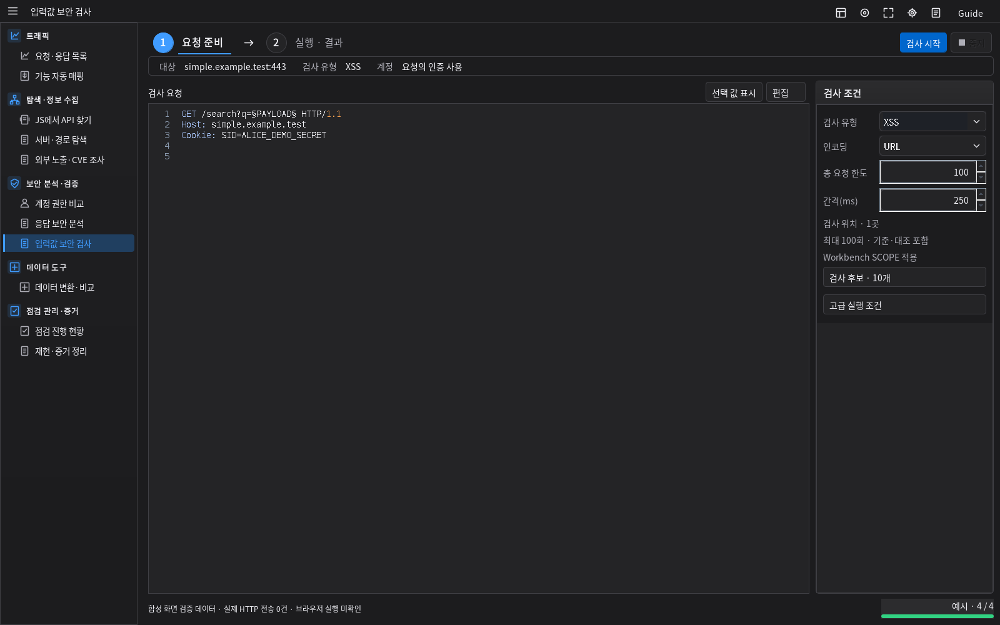
- 요청 편집과 검사 조건을 함께 볼 수 있도록 준비 흐름을 구성했습니다.
- 후보·고급 설정은 접어서 열고 대상·인증·검사 위치·요청 한도 같은 필수 조건은 확인할 수 있습니다.
- 검사 시작·중지를 함께 유지하며 표시·정렬·보기 전환으로 작성한 요청 바이트를 변경하지 않습니다.
10. 데이터 변환·비교
입력에 필요한 변환을 적용하고 원문과 결과를 나란히 대조합니다.
라이트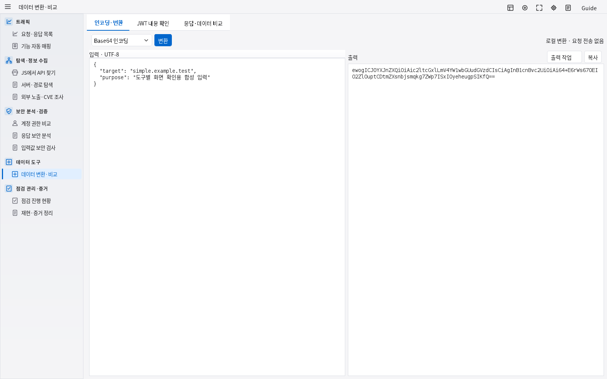
다크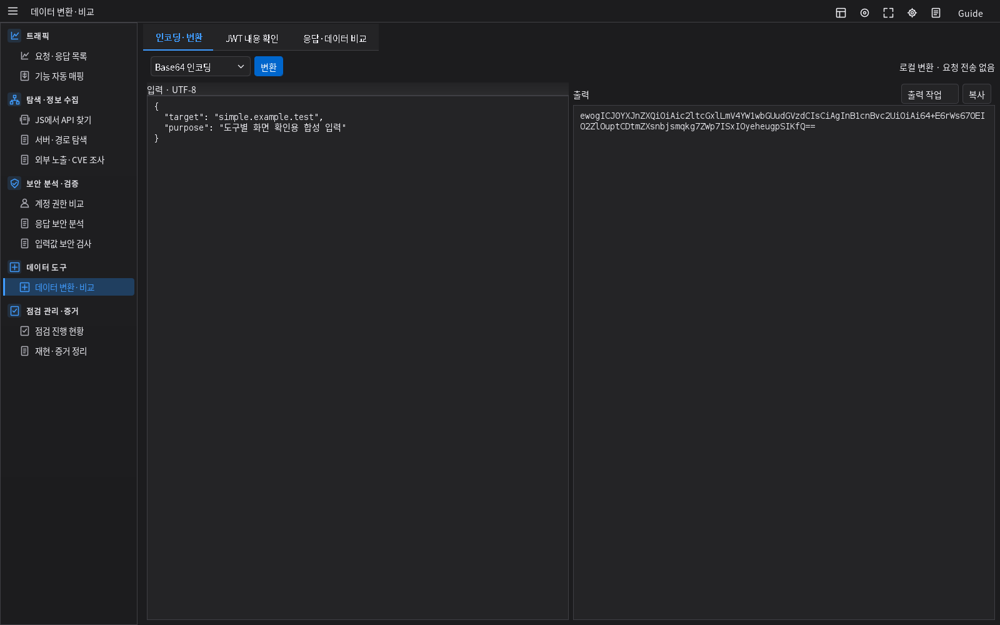
- 변환 방식과 실행을 공통 작업줄로 묶고 입력과 출력을 나란히 대조합니다.
- 복사는 출력 문맥에 두고 출력 재사용은 출력 작업 메뉴로 구분했습니다.
- JWT와 응답 비교 등 기존 모드를 유지하며 변환은 기존 로컬 엔진을 사용합니다.
11. 점검 진행 현황
남은 항목을 찾고 근거를 검토한 뒤 완료 상태를 기록합니다.
라이트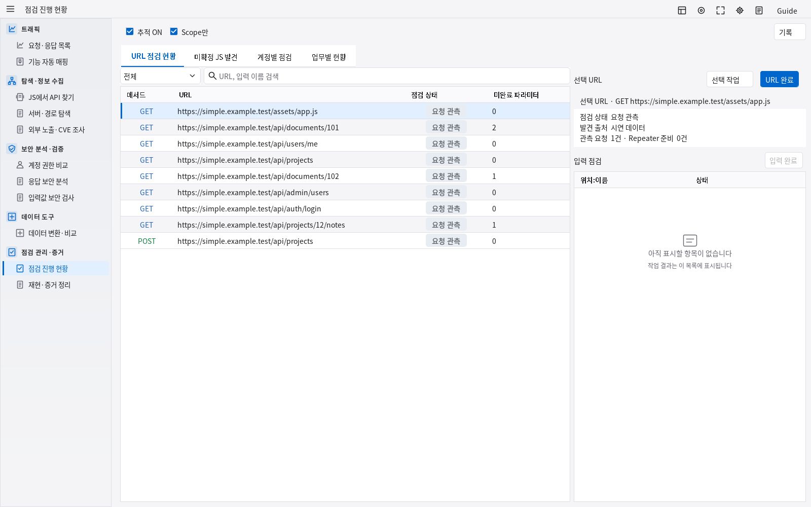
다크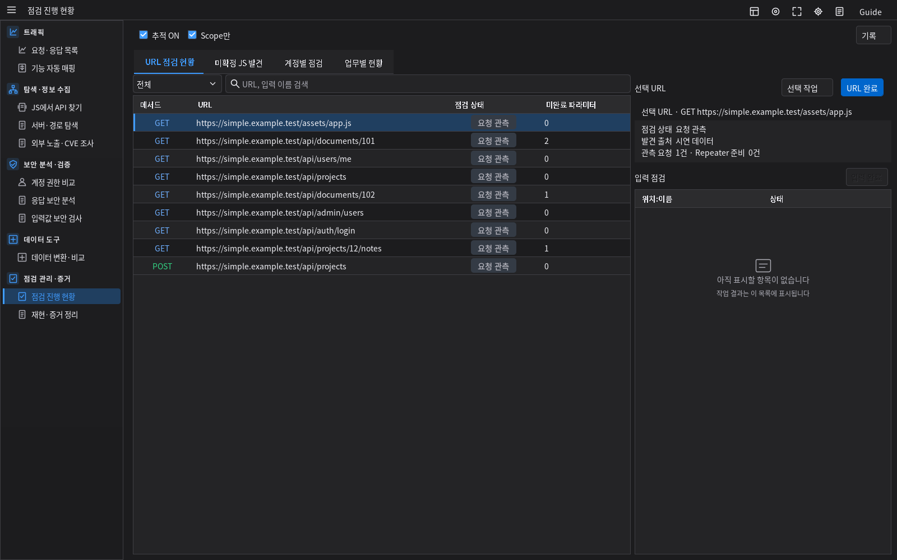
- URL 목록과 선택 항목의 입력·근거를 연결해 남은 항목을 검토합니다.
- 완료 표시는 현재 선택 대상과 함께 배치하고 기록 관리는 이름 있는 메뉴로 정리했습니다.
- URL 완료·개별 입력 완료를 구분하며 기존 상태와 원본 연결을 유지합니다.
12. 재현·증거 정리
원본 근거를 확인하며 영향과 재현 절차를 작성하고, 가림을 확인해 저장합니다.
라이트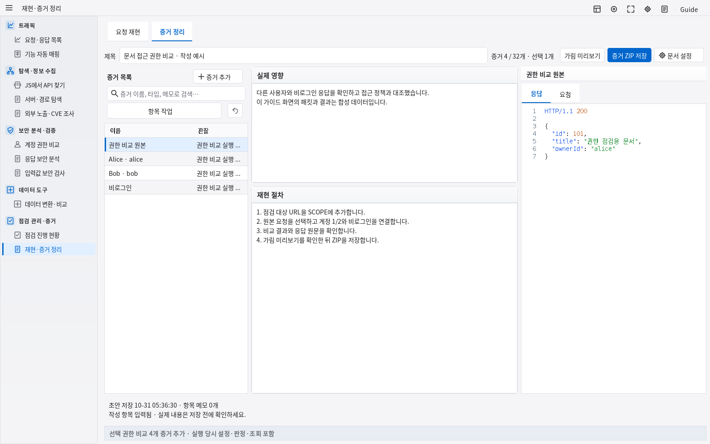
다크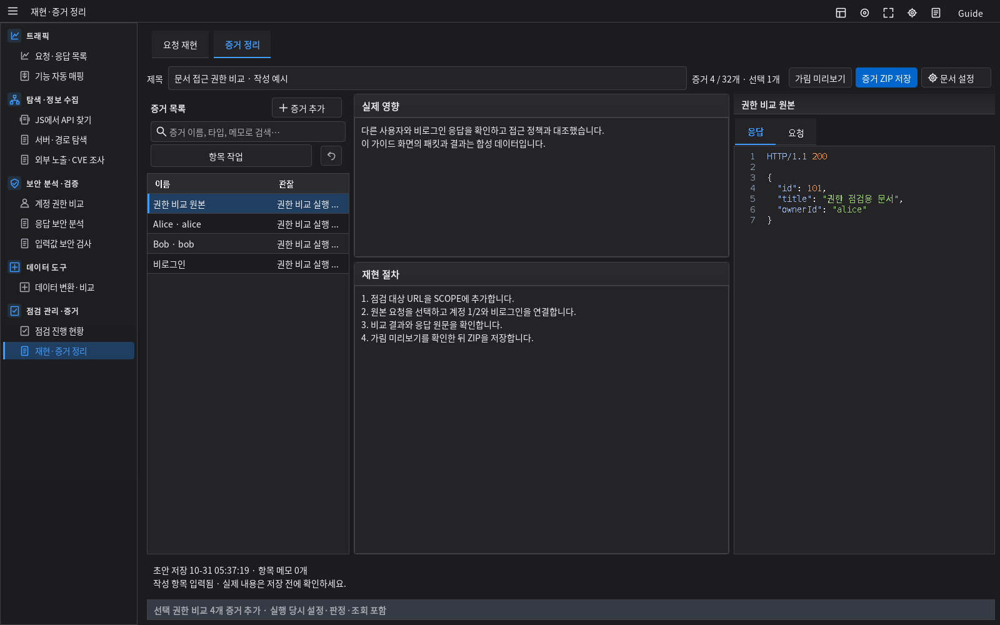
- 증거 목록·보고서 작성·원문 대조를 구분해 영향과 재현 절차를 읽으며 작성합니다.
- 항목별 이동·삭제·메모는 항목 작업으로, 가림 미리보기·ZIP 저장은 문서 작업으로 묶었습니다.
- 실행 취소·초안과 선택 원본 ID를 유지하며 저장은 기존 가림·증거 패키지 경로를 사용합니다.
13. 점검 대시보드
현재 실행의 관측 결과를 좁히고 원본 근거를 검토합니다.
라이트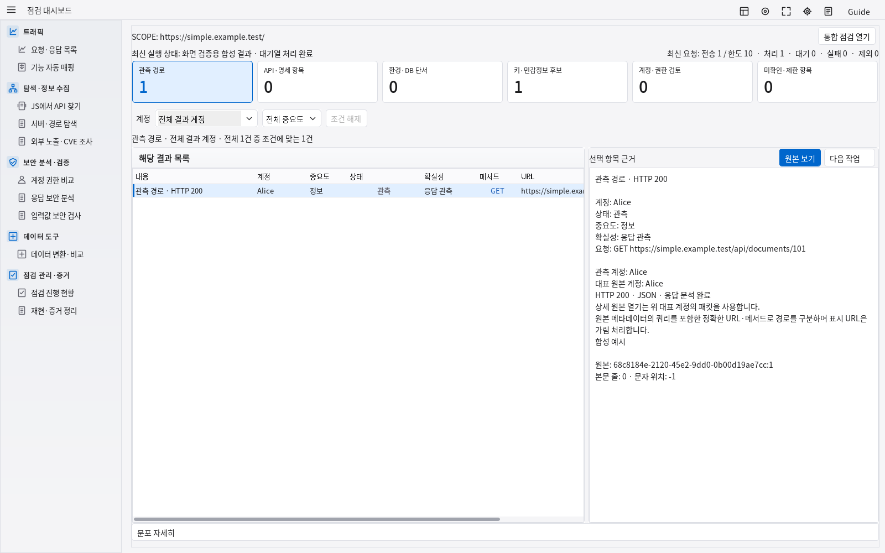
다크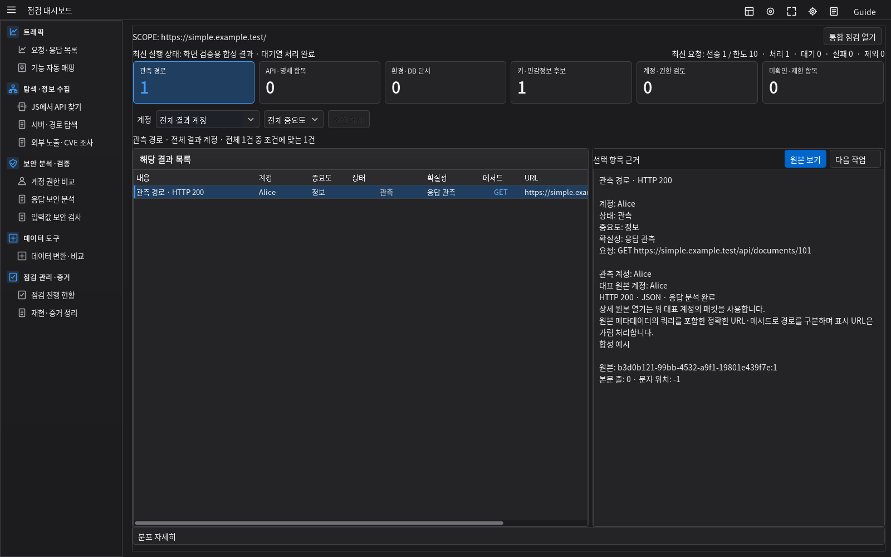
- 분류 요약과 결과 목록을 중심에 두고 중복 분포 그래프는 접히는 상세로 옮겼습니다.
- 선택 근거의 원본 보기를 강조하고 Repeater·증거 연결은 다음 작업 메뉴로 묶었습니다.
- 현재 실행의 관측 결과와 전송·예산 정보를 구분하며 대시보드 표시를 위해 새 검사를 시작하지 않습니다.
14. 입력값 보안 검사 · 실행·결과
관측한 결과와 실제 요청·응답을 대조해 재현 근거 만들기
라이트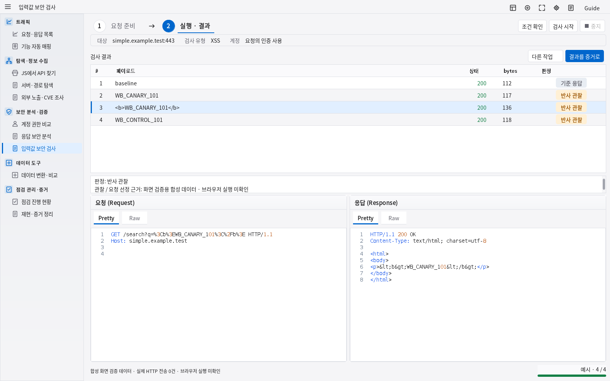
다크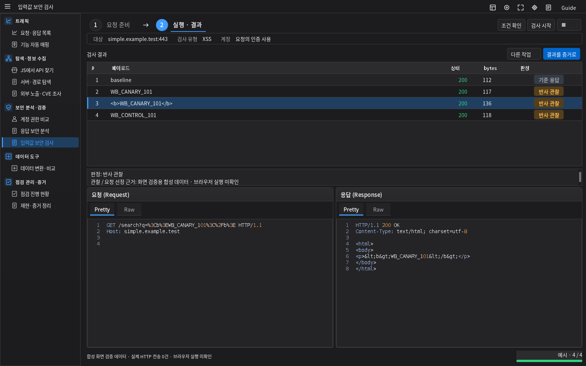
- 결과 표에서 선택한 항목의 판정 요약과 실제 요청·응답으로 이어지게 구성했습니다.
- 결과 증거 연결을 강조하고 Repeater와 보조 관리는 관련 메뉴에 유지했습니다.
- 반사 관찰과 브라우저 실행 확인을 구분하며 실제 전송·중지·원본 연결 계약을 유지합니다.
15. 재현·증거 정리 · 요청 재현
준비한 요청과 실행 조건을 확인하고 순차 실행 결과를 대조합니다.
라이트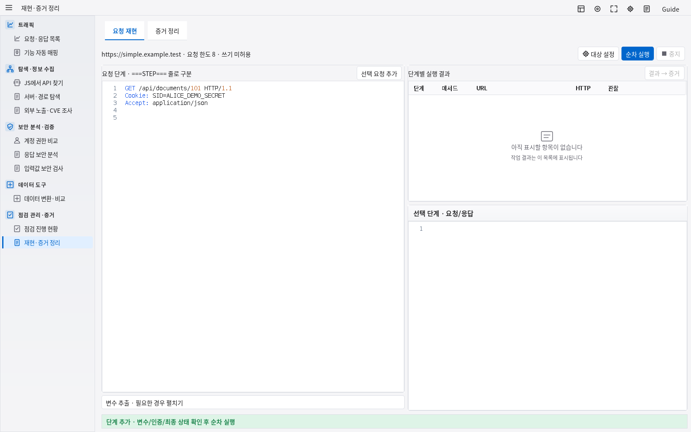
다크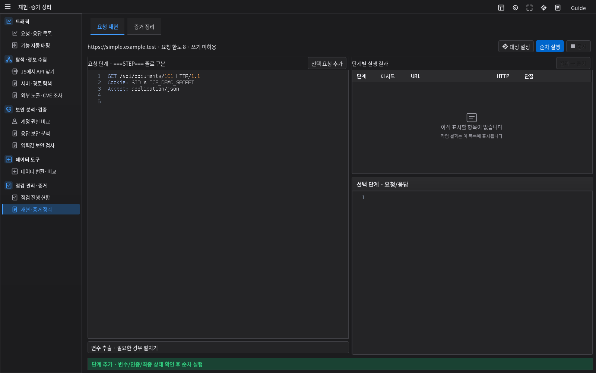
- 준비 요청·실행 결과·선택 단계 원문을 서로 다른 작업 영역으로 구분했습니다.
- 대상·쓰기 허용·요청 한도를 요약하고 변수 추출은 필요한 경우 펼칩니다.
- 순차 실행과 중지를 함께 두며 결과의 증거 연결은 실행 결과 문맥에 유지합니다.
16. 계정 권한 비교 · 인증 후보 연결
같은 대상의 인증 후보를 비교 역할에 연결하기
라이트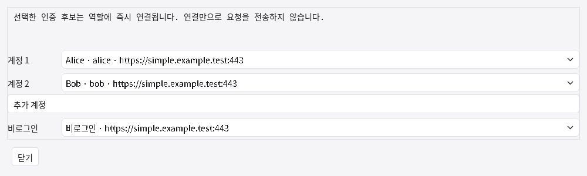
다크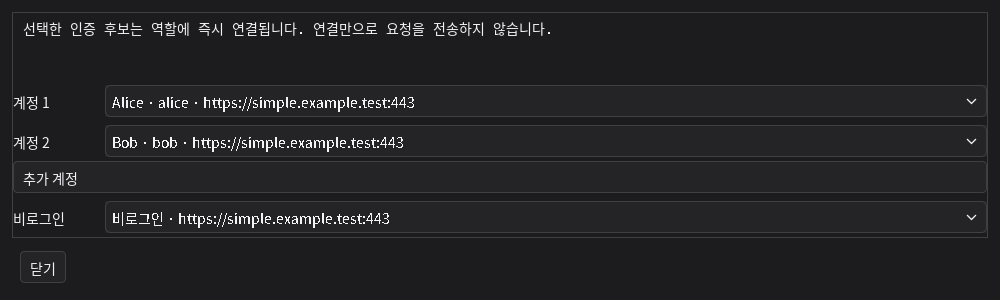
- 역할과 인증 후보를 같은 행에서 확인하고 미사용 추가 계정은 접어 정리했습니다.
- 긴 신원 정보는 확인 가능한 설명으로 유지하며 첫 연결을 검증된 기준 계정으로 확정하지 않습니다.
- 기존 선택 즉시 반영 방식을 유지하고 별도의 새 적용 단계나 자동 전송을 추가하지 않았습니다.